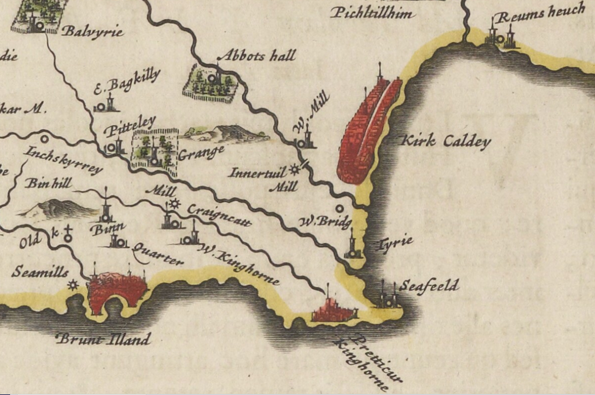

Old Maps
The main source of the following Maps is the National Library of Scotland (NLS). Their home page is here. Their Maps are
held here.

The old maps for the Kinghorn area are:
Map of Scotland circa 1560 - Only 3 towns are shown in Fifa: St. Andreas, Donfermilg, Kinghorn plus Lacus Leunus (Loch Leven)Blaeu's 1654 Engraved Map of Fife. - Zoom in to look at Kinghorn. For Blaeu's 1654 description of Fife (see Historical)
Maritime Map Edinburgh Firth circa 1693
River and Firth of Forth 1730
Roy's Military Map of Scotland 1747 - 1755
John Ainslie's 1775 Map of Fife comprising 6 Sheets
Thomson's 1827 Fife & Kinross comprising 2 Sheets
Sharp, Greewood & Fowler's 1828 Fife & Kinross comprising 4 Sheets
The following two maps are OS 6" to the mile, Fife, surveyed 1855 published 1856.
Sheet 36 (includes: Aberdour; Auchterderran; Burntisland; Kinghorn;)
Sheet 37 (includes: Kinghorn; Kirkcaldy; Dysart;)
Burgh Maps
Late 18th century Mill feasibilty study survey Map - Contributed by Bill ForrestKinghorn Town Plan surveyed 1828 - Ginny Reid (Historical Society): "The numbers on this plan are not the street numbers. The plan was originally made to allow the council to keep track of their property tax. The numbers corresponded to a number in the council stent ledger, later the valuation roll".
Great Reform Act Plans Kinghorn 1832 - Part of the 1832 Report (see Historical)
Kinghorn Map revised 1894 published 1895
Kinghorn Map revised 1913 published 1914
Kinghorn Map revised 1943 published 1947
The origin of the Place Names of Kinghorn - researched by Tom Fisher
Bathymetric Loch Survey 1905- How deep is the Loch?
Proposed new Piers for Kinghorn & Pettycur circa 1847- Contributed by the late James Edmiston MBE
Spyglass - You can select an old map and overlay it onto the up-to date one using an adjustable spyglass.
Choose any area in Fife or Scotland. - Click on the small rectangle covering the area you want to look at then select one of the 3 maps that are presented on the right hand side of your screen e.g. Either the 1895,1914 or 1947 Map.